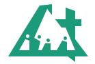
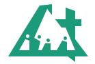
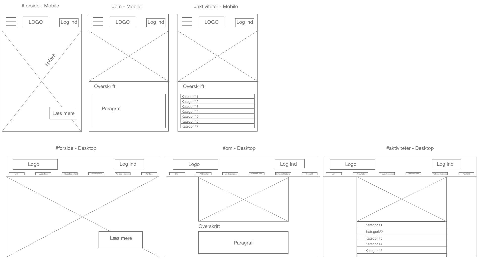
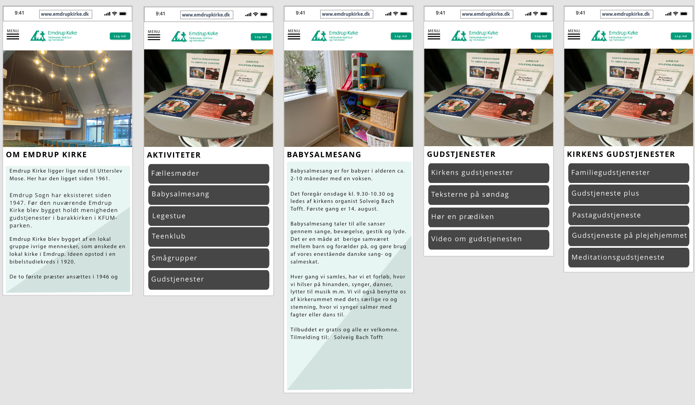

Grundlæggende Indhold
Pilotvideo
I vores første opgave på grunlæggende indhold, blev vi udfordret med at skulle lære Adobe Premiere Pro til at redigere videoer i. Dette var nyt for mange og gav os mange udfordringer. Vi skulle lave en 1-minuts lang video hvor vi skulle interviewe nogen som havde en passion inden for et emne. Her valgte jeg at interview min kærete som er selvstændig frisør inde i Købehavn.
Det var endnu en lærerig proces og man fik en idé om hvor meget arbejde og forberedelse der egentlig skulle til for en 1-minuts video. Samtidigt var der meget teoretisk viden omkring interviewteknik, 5-skudsreglen, dramaturgi og kameraindstillinger.
Der var også en del om lydredigering som var noget af det som også tog en del tid mht. til opgaven.
Redesign af Virksomhed
Redesign af Emdrup Kirke
 I vores anden opgave som var den største og mest omfattende på 1. semester, skulle vi finde en virksomhed som kunne have brug for at få deres hjemmesiden redesignet. Det var en sværrere opgave end mange havde forventet. Vi fandt dog frem til at vi ville prøve lykken med Emdrup Kirke, hvilket var et stort projekt i sig selv. Vi samlede alt den information vi kunne omkring kirkens nuværende hjemmeside og lavede bl.a. en BERT test og en 5-sekunders test for at få så meget dataindsamling vi kunne omkring virksomheden. Derefter tog vi ud til kirken hvor vi talte med præsten om hans idéer og visioner for kirken. Dette gav os indsigt i hvad de gerne ville kommunikere med hjemmesiden og hvordan de gerne ville have at det skulle foregå. Vi havde til opgave at producere indhold i form af video og fotomateriale. Præsten var meget insisterende på at logoet forblev som det var.

I vores anden opgave som var den største og mest omfattende på 1. semester, skulle vi finde en virksomhed som kunne have brug for at få deres hjemmesiden redesignet. Det var en sværrere opgave end mange havde forventet. Vi fandt dog frem til at vi ville prøve lykken med Emdrup Kirke, hvilket var et stort projekt i sig selv. Vi samlede alt den information vi kunne omkring kirkens nuværende hjemmeside og lavede bl.a. en BERT test og en 5-sekunders test for at få så meget dataindsamling vi kunne omkring virksomheden. Derefter tog vi ud til kirken hvor vi talte med præsten om hans idéer og visioner for kirken. Dette gav os indsigt i hvad de gerne ville kommunikere med hjemmesiden og hvordan de gerne ville have at det skulle foregå. Vi havde til opgave at producere indhold i form af video og fotomateriale. Præsten var meget insisterende på at logoet forblev som det var.

Vi startede med at lave en wireframe til hvordan vi gerne ville have siden skulle være.

Derefter vi lavede vi en prototype af hvordan vi ville have den skulle se ud. Vi besluttede os for at tage nogle designvalg der passede godt med logoens grønne farve. Vi justerede derefter baggrunden til at tilpasse sig til deres ønsker med den grønne farve.

Interview med Præsten fra Emdrup Kirke
En af de helt store udfordringer i opgaven, var at lave et videointerview som skulle præsentere kirken.
Fagligt udbytte
Dette var det mest omfattende og mest krævende forløb når det kommer til tid. Det var en fantastisk opgave, med med nogenlunde kreativ frihed på pilotvidoen, og så var det også utroligt lærerigt at skulle lytte til en virksomhed og analysere hvad de gerne ville og hvordan vi kunne bruge denne viden til at skabe noget som de blev glade for.
Dokumentation
Der var en stor del dokumentation der skulle til under dette forløb og det er endnu en ting som gør processen endnu mere spænde. Det handler ikke altid kun om selve produktet, men også om hvordan selve rejsen er gået. Vi var godt tilfredse med vores design og vores feedback var også meget positiv, både fra undervisere og medstuderende.